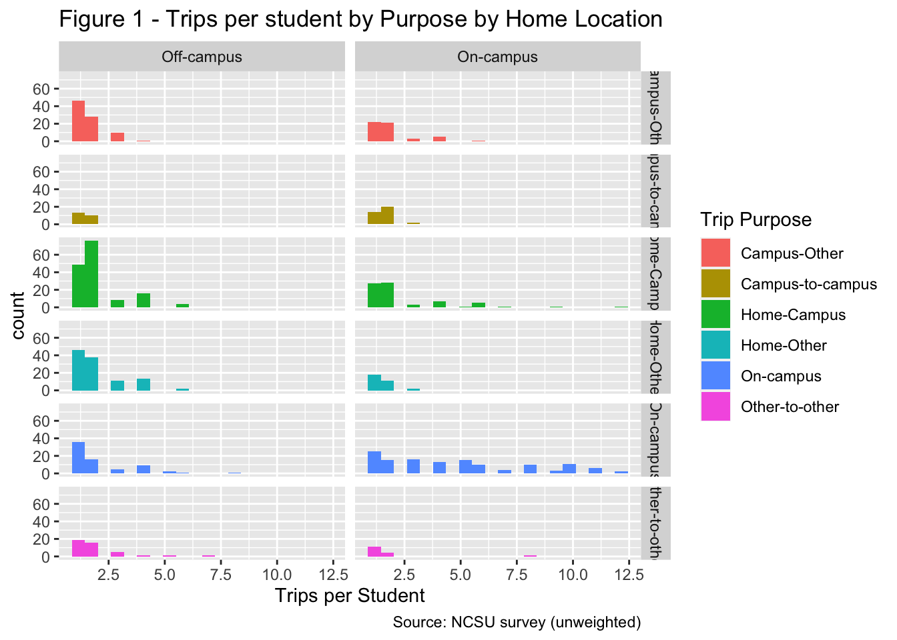
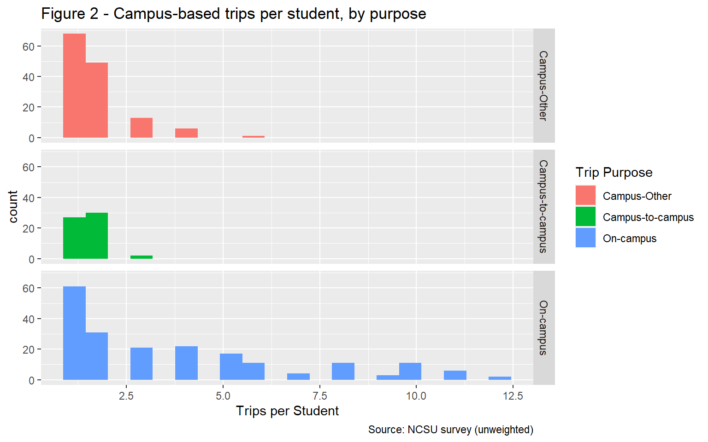
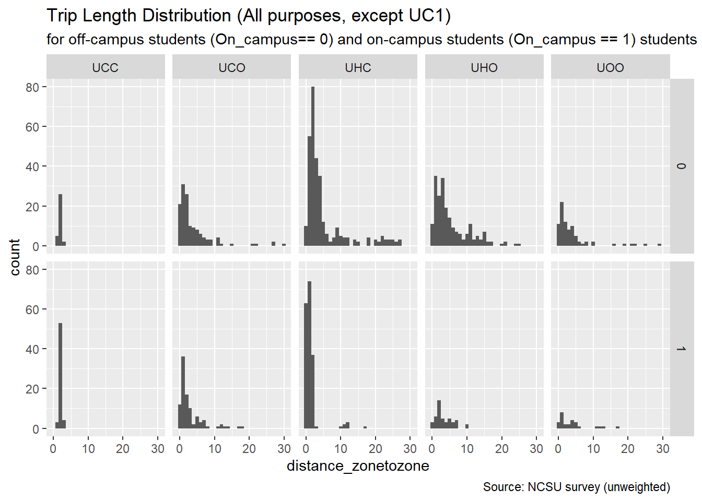
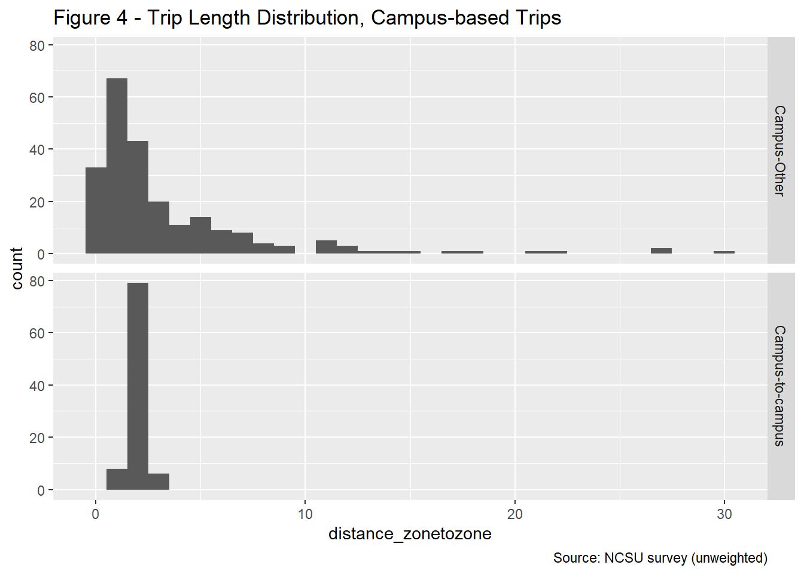

University
Caliper Corporation
January 04, 2022
Introduction
The University Model simulates the on- and off-campus travel of students of the Triangle Region’s four large universities: North Carolina State University (NCSU), The University of North Carolina at Chapel Hill (UNC), Duke University (Duke) and North Carolina Central University (NCCU). In 2016, the four universities had a combined enrollment of 84481, with 31025 students at NCSU, 29437 at UNC, 15904 at Duke and 8115 at NCCU.
On- and off-campus students are expected to have different travel behavior. On-campus students are expected to make more trips, with many of those trips expected to start and end on campus. On-campus students are more likely to be undergraduate students who are enrolled at the university full-time. Graduate students are more likely to reside off-campus.
The model design document calls for the following trip purposes:
- Home-Based-Campus (Home-Campus or UHC)
- Home-Based-Other (Home-Other or UHO)
- Campus-Based-Other (Campus-Other or UCO)
- On-Campus (On-campus or UC1)
- Inter-Campus (Campus-to-Campus or UCC)
- University student Other-Other (Other-to-Other or UOO)
Trip Generation
The first step in the model development process is to create trip production and attraction models for the above trip purposes. More information about trip generation can be found at https://tfresource.org/topics/Trip_Generation.html
This analysis is presented below and relies on a 2014 survey of NCSU students conducted by ITRE on behalf of the NC Department of Transportation. Because we only have survey data for NCSU students, we are assuming that the travel behavior of students attending NCSU is sufficiently representative of NCCU, Duke, and UNC students. Trip production rates developed based on the NCSU survey were verified using a survey of students attending universities in Virginia.
Sources
NCSU Student Travel Survey
After removing respondents who did not finish the survey and respondents with a mismatch of more than one between their stated number of trips and the number of trips for which they provided a description, the total number of complete and valid samples from the NCSU survey consists of 150 on-campus students and 186 off-campus students. The breakdown by graduate and undergraduate students is presented in the table below.
| Home Location | Class Status | Count | Share |
|---|---|---|---|
| On-campus | Undergraduate | 138 | 41.1% |
| Off-campus | Graduate | 120 | 35.7% |
| Off-campus | Undergraduate | 66 | 19.6% |
| On-campus | Graduate | 12 | 3.6% |
Virginia Universities Student Travel Surveys
As summarized in Khattak et al. (2012), student travel behavior surveys were conducted at four universities in Virginia in 2009 and repeated for two of the universities in 2010. The first round of surveys obtained a sample size of 2784. The sample size of the second round was 2596.
Trip Productions
Trip production rates were developed based on the NCSU survey and verified using trip rates from the Virginia universities surveys.
We start with the NCSU survey. The 150 on-campus students and 186 off-campus students who participated in the survey reported a combined 1974 trips.The NCSU dataset includes person weights, which were developed by ITRE based on residential locations (on-campus vs. off-campus), credit hours (full-time vs. part-time) and class status (undergraduate vs. graduate). A total of 148 on-campus and 186 off-campus records were assigned a weight. Based on the survey, the NCSU student population made a total of 167898.52 trips per day in 2016.
The NCSU data was used to develop production rates were developed for each the six purposes included in the model. Depending on the trip purpose, the production end of the trip is either home, campus or other as shown in the table below.
| Trip Purpose | Production end |
|---|---|
| Home-Campus | Home |
| Home-Other | Home |
| Campus-Other | Campus |
| On-campus | Campus |
| Campus-to-campus | Origin |
| Other-to-other | Origin |
Figure 1 shows the average number of trips per student per day for the two home-based trip purposes for students residing on-campus and off-campus, based on the raw NCSU survey data. Figure 2 shows the average number of trips per student for the three campus-based trip purposes. For most trip purpose, the distribution is skewed to the right, with most students making few trips and a few students making many trips.

To develop production rates, two methods were explored/discussed: cross-classification and regression. Explanatory variables in regression models could include student characteristics such as class status (undergraduate and graduate), on and/or off-campus employment, credit hours (full-time or part-time), and car availability. These variables were expected, and/or shown by other research, to affect university trip production rates. However, using these variables would require that forecast year socio-economic datasets and/or upstream model steps included these variables, which is not currently expected. We therefore used cross-classification techniques, as discussed below.
As part of the cross-classification approach, daily trips per student reported in the NCSU survey were classified based on the following criteria:
- Trip purpose: Home-Campus, Home-Other, Campus-Other, On-campus, Other-to-other, Campus-to-campus
- For home-based trips (Home-Campus,Home-Other): on-campus and off-campus place of residence
- For Other-to-Other trips: Travel mode (walk, bike, transit, and auto (includes drive and carpool))
Production rates were developed based on the weighted and unweighted data, as a check on the influence of the weighting. We found that the rates based on the weighted data are very similar to the rates based on the unweighted data.
The average daily trip rate, using the weighted data, is 5.797. On-campus students make an average of 7.125 trips per day, while off-campus students make an average of 5.158 trips per day. Rates by trip purpose show that on-campus students make more on-campus trips than off-campus students but make fewer off-campus trips, which matched our expectations.
The selected production rates for five of the six trip purposes (all except Other-to-other) are presented in the table below. For home-based trip purposes, separate rates are presented based on student home location. The production rates for home-based trips are trips per student. For campus-based trips, the production rates are per 1000 square feet of campus building space.
| Home Location | Trip Purpose | Production Rate | Unit | Sample Size |
|---|---|---|---|---|
| On-campus | Home-Campus | 1.195 | Student | 150 |
| On-campus | Home-Other | 0.256 | Student | 150 |
| Off-campus | Home-Campus | 1.714 | Student | 186 |
| Off-campus | Home-Other | 1.240 | Student | 186 |
| All-Students | On-campus | 11.170 | Campus Building SF (in 000s) | 336 |
| All-Students | Campus-to-campus | 1.300 | Campus Building SF (in 000s) | 336 |
| All-Students | Campus-Other | 3.998 | Campus Building SF (in 000s) | 336 |
The production rates selected for the Triangle Model are somewhat higher than the production trip rates estimated by Khattak et al (2012) based on the Virginia student travel surveys. During first round of surveys at Old Dominion (ODU), Virginia Tech (VT), University of Virginia and Virginia Commonwealth, daily trip rates ranged from 4.4 to 4.9. For the second round of surveys, the survey instruments were revised to reduce the survey response burden and a larger sample size was obtained. Based on the second round, daily trip rates were 5.3 at ODU and 5.6 at VT.
The trip production rates by mode will be used to estimate productions for Other-to-other trips. More specifically, the Other-to-other productions will be a function of Home-based Other and Campus-to-Other attractions, as discussed in the model design document. This approach ensures consistency between the “Other” trip ends by mode, i.e., it is not possible to have only automobile Home-Other and Campus-Other movements and only bicycle Other-to-other movements. The table below summarizes the Home-Other and Campus-Other trips by mode: (1) Auto, which includes both drive and carpool; (2) Transit; (3) Walk; and (4) Bicycle. The NCSU survey sample did not include any Other-to-other trips by bicycle.
| Trip Purpose | Mode | Trip Rate |
|---|---|---|
| Home-Other and Campus-Other | Auto | 1.242 |
| Home-Other and Campus-Other | Walk | 0.256 |
| Home-Other and Campus-Other | Transit | 0.135 |
| Home-Other and Campus-Other | Bicycle | 0.034 |
The ratios between the production rates for Other-to-other trips and the production rates for Home-Other and Campus-Other trips are 0.228 for car trips and 0.094 for non-car trips. The small sample sizes prevent further segmentation by mode. Other-to-other trips by auto are estimated to equal 0.228 times the number of Home-Other and Home-Campus auto trips. For each of the three non-auto modes, the Other-to-other trips are estimated by multiplying the Home-Other and Home-Campus trips made with that mode by 0.094. The resulting Other-to-other production rates are in the table below.
| Trip Purpose | Mode | Trip Rate |
|---|---|---|
| Other-to-other | Auto | 0.283 |
| Other-to-other | Walk | 0.024 |
| Other-to-other | Transit | 0.013 |
| Other-to-other | Bicycle | 0.003 |
| Home Location | Purpose | NCSU | UNC | Duke | NCCU |
|---|---|---|---|---|---|
| On-campus | Home-Campus | 14846 | 13611 | 6916 | 3464 |
| On-campus | Home-Other | 3185 | 2920 | 1484 | 743 |
| On- and Off-campus | Campus-Other | 23179 | 22715 | 22367 | 3463 |
| On- and Off-campus | On-campus | 64754 | 63459 | 62487 | 9673 |
| On- and Off-campus | Campus-to-campus | 7534 | 7383 | 7270 | 1125 |
| Off-campus | Home-Campus | 31876 | 30926 | 17335 | 8938 |
| Off-campus | Home-Other | 23073 | 22386 | 12548 | 6470 |
Trip Attractions
As with the trip production rates, trip attraction rates for off-campus attractions (Home- Other and Campus-Other) were developed based on the survey of NCSU students.
For on-campus attractions (Home-based Campus, Campus-to-campus), the attractions are distributed among campus zones proportional to the distribution of the square footage of university buildings.
The analysis begins with correlations between the university attractions and land use characteristics at the TAZ level. For trip attractions by on-campus students, the off-campus student population and the number of retail jobs have the highest correlation coefficients. For trips by off-campus students, off-campus student population has the highest correlation coefficient.| TAZ Data Variable | Attractions |
|---|---|
| NCSU Off-campus Student Population | 0.244 |
| Retail Employment | 0.084 |
| NCSU Student Group Quarter Population | 0.083 |
| Total Population | 0.082 |
| Households | 0.068 |
| Service Employment (High) | 0.045 |
| Total Employment | 0.031 |
| UNC Student Group Quarters Population | 0.016 |
| Industrial Employment | 0.013 |
| Office Employment | -0.006 |
| Service Employment (Low) | -0.007 |
Regression Models
The regression models were estimated for each purpose using a dataset that includes all TAZs for which the survey included trip attractions, of any purpose. The TAZs that do not have any trip attractions in the survey were excluded from the dataset used for model estimation.
The Campus-other attraction model explains the number of trip attractions at the TAZ level based on the number of the students residing in the TAZ and the number of retail jobs in the TAZ. The coefficients have the expected signs.
Campus-Other Trip Attractions
| variable | estimate | statistic | p.value |
|---|---|---|---|
| intercept | 73.7073 | 3.19 | 0.0017 |
| Retail | 0.0563 | 1.03 | 0.3050 |
| StudOff_NCSU | 0.4086 | 3.75 | 0.0002 |
| Adjusted R-squared | 0.0609 | NA | NA |
As Campus-other trips by on-campus students, Home-Other trips by on-campus students are trips between the campus and off-campus location. The model explains the number of trips based on the number of off-campus students residing in the TAZ and the number of retail jobs.
Home-Other Trip Attractions, On-Campus students
| variable | estimate | statistic | p.value |
|---|---|---|---|
| intercept | 5.5856 | 1.67 | 0.0968 |
| Retail | 0.0247 | 3.22 | 0.0015 |
| StudOff_NCSU | 0.0292 | 1.84 | 0.0666 |
| Adjusted R-squared | 0.0528 | NA | NA |
Home-Other Trip Attractions, Off-Campus students
Home-Other trips by off-campus students have two off-campus trip ends. The model explains UHO trips by off-campus students based on the off- campus student population and the number of retail jobs.| variable | estimate | statistic | p.value |
|---|---|---|---|
| intercept | 100.1907 | 5.378 | 0.0000 |
| Retail | 0.0394 | 0.924 | 0.3567 |
| StudOff_NCSU | 0.2240 | 2.546 | 0.0117 |
| Adjusted R-squared | 0.0249 | NA | NA |
Trip Distribution
The second step of the university model development process is to develop a trip distribution model. In this step, the TAZ level productions and attractions estimated in the trip generation step are allocated to TAZ pairs. The allocation is based on a gravity model that takes into account the impedance (travel time, distance and cost) between each of the TAZ pairs. More information about trip distribution and gravity models can be found in https://tfresource.org/topics/Trip_distribution.html.
[describe gravity model developed for this]
The NCSU survey provides information about the length of existing home-based and campus-based trips by NCSU students. These observed trip lengths were used to validate the trip length produced with the gravity model. [more]
Trip length distribution from the NCSU survey

Mode Choice
The third step in the university model development process is the mode choice model. During the mode choice step, trips by zonal pair are distributed across available modes. More information about mode choice modeling can be found in https://tfresource.org/topics/Mode_choice.html.
The NCSU survey provides insight into the existing mode choice of NCSU students. Because the dataset was too limited to be used to estimate a mode choice model, time and cost coefficients were asserted. The asserted coefficients reflect typical sensitivities to time and cost for travelers with average incomes.
The multinomial mode choice model explains the split between the university model’s four modes - walk, bike, transit and car based on time, cost and modal preferences. The NCSU survey data was used to develop the calibration target for the mode choice model for all four universities.
Mode split from NCSU survey
The figure below shows the number of trips reported by the NCSU survey respondents for five of the model’s trip purposes. The modes are grouped into car, which is drive alone; carpool; bus; walk; bicycle and other. While drive alone is the most common mode, the graph shows relatively large numbers of bus trips (for Home-Campus and Campus-to-campus) and of walk trips (for Home-Campus and Campus-Other). The graph does not include On-campus trips, which are mostly walk trips.
Sample overview

The tables below show the mode split for campus-based trips, home-based trips by students residing on-campus and home-based trips by students residing off-campus. The tables combine drive alone and carpool into auto. The tables show that transit is the most common mode for Campus-to-campus trips, with 74 percent of trips being made by transit. Transit is the second most common mode for Home-Campus trips by students residing off-campus, with 29 percent of transit trips and 55 percent of auto trips. Home-campus trips by students residing on-campus are most likely to be walk trips (62 percent), followed by transit trips (19 percent). On-campus trips are mostly walk trips (90 percent). There are very few trips made with modes classified as “other”.
Campus-based trips mode split
| Trip Purpose | Percent Bicycle | Percent Walk | Percent Transit | Percent Auto | Percent Other |
|---|---|---|---|---|---|
| Campus-Other | 2.10 | 26.55 | 15.22 | 55.89 | 0.242 |
| Campus-to-campus | 1.78 | 1.78 | 73.83 | 21.88 | 0.730 |
| On-campus | 3.81 | 89.54 | 2.86 | 3.68 | 0.111 |
Home-based trips mode split, On-Campus students
| Trip Purpose | Percent Bicycle | Percent Walk | Percent Transit | Percent Auto | Percent Other |
|---|---|---|---|---|---|
| Home-Campus | 3.41 | 62.10 | 18.81 | 15.7 | 0 |
| Home-Other | 5.30 | 7.95 | 3.05 | 83.7 | 0 |
Home-based trips mode split, Off-Campus students
| Trip Purpose | Percent Bicycle | Percent Walk | Percent Transit | Percent Auto | Percent Other |
|---|---|---|---|---|---|
| Home-Campus | 1.58 | 13.12 | 29.28 | 54.5 | 1.55 |
| Home-Other | 1.66 | 6.09 | 2.23 | 90.0 | 0.00 |
Mode split calibration targets
The calibration targets were developed based on the mode split from the NCSU survey summarized by the four modes of the model: walk, bicycle, transit and auto. The relatively large targets for transit for Campus-to-campus and Home-Campus trips contribute positively to the transit ridership forecast.
Campus-based trips mode split calibration targets
| Trip Purpose | Percent Bicycle | Percent Walk | Percent Transit | Percent Auto | Total |
|---|---|---|---|---|---|
| Campus-Other | 2.10 | 26.62 | 15.26 | 56.02 | 100 |
| Campus-to-campus | 1.79 | 1.79 | 74.38 | 22.04 | 100 |
| On-campus | 3.81 | 89.64 | 2.87 | 3.68 | 100 |
Home-based trips mode split calibration targets, On-Campus students
| Trip Purpose | Percent Bicycle | Percent Walk | Percent Transit | Percent Auto | Total |
|---|---|---|---|---|---|
| Home-Campus | 3.41 | 62.10 | 18.81 | 15.7 | 100 |
| Home-Other | 5.30 | 7.95 | 3.05 | 83.7 | 100 |
Home-based trips mode split calibration targets, Off-Campus students
| Trip Purpose | Percent Bicycle | Percent Walk | Percent Transit | Percent Auto | Total |
|---|---|---|---|---|---|
| Home-Campus | 1.60 | 13.32 | 29.74 | 55.3 | 100 |
| Home-Other | 1.66 | 6.09 | 2.23 | 90.0 | 100 |
Mode choice coefficients
The mode choice coefficients were asserted because the NCSU survey dataset was not sufficient to estimate a mode choice model. The implied value of time (VOT) for walk time, bike time, transit time and drive time is $12 per hour, which is a reasonable average for students. For transit access time, the implied VOT is $18 per hour, which is also reasonable.| Coefficient | Value |
|---|---|
| IVTT | -0.04 |
| OVTT | -0.06 |
| Cost | -0.20 |
Caliper Corporation, 2021